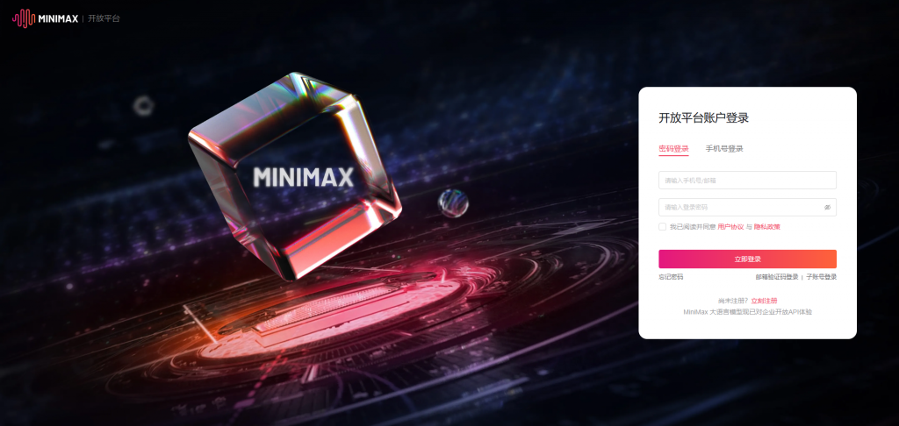
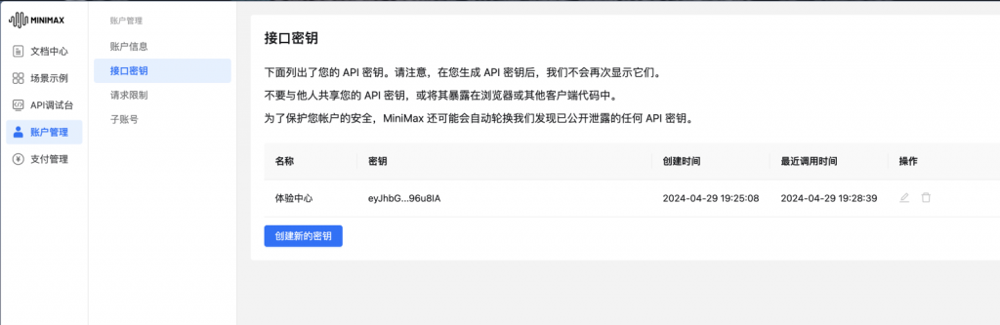
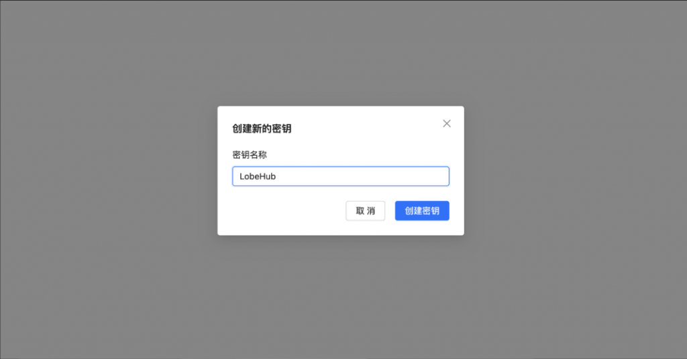
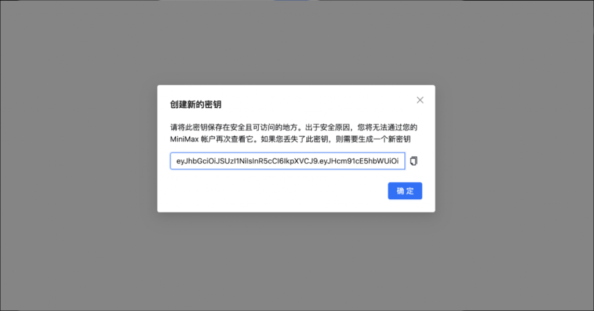

性价比最高，MiniMax-M2.5 旗舰 230B MoE，SWE-Bench 80.2%
在另一个浏览器窗口中，打开 MiniMax 开放平台：
点击 「注册」，使用手机号或邮箱完成注册。
已有账号则直接 「登录」。

如果系统提示需要认证：
1. 进入「用户中心」→「基本信息」
2. 完成手机号验证和实名认证
登录后，直接打开接口密钥管理页面：
或者通过导航：用户中心 → 基本信息 → 「接口密钥」

在接口密钥页面：
1. 点击 「创建新的密钥」
2. 输入名称（如「OpenClaw」）
3. 点击 「确认创建」

创建成功后，点击 「复制」 按钮。
MiniMax API Key 格式类似：

复制好 API Key 后：
1. 切换回安装程序窗口（命令行黑色窗口）
2. 在提示处粘贴 API Key（右键粘贴或 Ctrl+V）
3. 按 Enter 确认
安装程序会自动测试 API 连接是否正常。
| 模型 | 特点 | 上下文 | 价格 |
|---|---|---|---|
| MiniMax-M2.5 | 旗舰 230B MoE，10B 激活 | 204K | $0.15/M input |
| MiniMax-M2.5-highspeed | 高速版，~100 tps | 204K | $0.15/M input |
| MiniMax-M2.1 | 编程增强模型 | 204K | 付费 |
| MiniMax-M2.1-highspeed | 编程高速版 | 204K | 付费 |
Q: API Key 丢失了怎么办？
A: API Key 只在创建时显示一次。请在密钥管理页面删除旧 Key 后重新创建。
Q: highspeed 模型和普通模型有什么区别？
A: highspeed 模型输出速度更快（约 100 tokens/秒），效果基本一致，适合对响应速度有要求的场景。
Q: SWE-Bench 80.2% 是什么意思？
A: SWE-Bench 是代码编程能力的权威评测。80.2% 表示 MiniMax 在编程任务上表现非常出色。